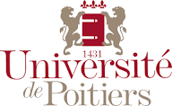

Marc ALPHONSUS
Lead data scientist & Code enthusiast
Mes contributions couvrent la totalité du spectre d’un projet ML centric - du design à la production, en passant par la communication pour accompagner les métiers aux changements dans leurs usages.
J’adore la combinaison de créativité et de théorie nécessaire dans le job.
| 55b rue de Ribray |
alphonsus.marc@gmail.com |
| 79000 Niort |
linkedin, github |
| FRANCE |
+33 6 62 62 62 48 |
📈Experience
📣Lead data scientist 📆2018 - 2020
Je suis intervenu essentiellement tant que spécialiste du NLP - soit pour fournir des services des services d’IA à l’état de l’art; soit avec un peu plus de hauteur pour aider mes clients à construire leur stratégie IA.
- Groupe MACIF
Data scientist NLP
- Hub IA: plateforme de services d’IA
- Convergence: transformation de l’espace personnel vers un chatbot
- NLP: production de modèles d’analyse sémantique multicanaux
- RecoDoc: projet vision autour de la rad/lad
- Lab IA CGI
Lead Tech Data Science
- avant-vente, cadrage/gestion de projet
- formations, présentations, conférences
- veille technologique
- réimplémentation, réplication SOTA
📣Data scientist 📆2014 - 2018
Data scientist dans une direction métier, puis détaché au Datalab, j’ai designé les modèles d’un certain nombre d’XPs et oeuvré à leur industrialisation.
- Mail: analyse sémantique automatisé des e-mails, devenu le projet Mélusine
- MAIF & Go: tarification d’une offre automobile connectée
- Valeur Sociétaire: modélisation de la rentalibité, LTV clients et prospects
- Téléphonie: prévision de la charge d’appels pour dimensionnement RH
- Détection d’anomalies: identification de risques sous-assurés
 📣TD Machine Learning 📆2017 - 2018
📣Statisticien 📆2013 - 2014
🚀Technical Experience
- Projets
- Textsim: nlp, analyse de similarité textuelle, résumé automatique
Count: comptage de population, density map
- Skills
- Coding:
Python, Spark, R, SAS, rust
Basics: UNIX, git, docker, HTML, CSS, SQL, Mongo
ML/DL: tf, torch, sklearn, NLP, Vision, Transfer Learning, Stacking, Boosting, RL
🎓 Training
- 2020
- RPA Developer Foundation; UIPath
- 2017
- Spécialisation Deep Learning; Deeplearning.ai x Coursera
- 2014
- Machine Learning; Stanford x Coursera
Deep Learning; Google x Udacity
- 2013
- Master, statistiques appliquées; Université de Poitiers
- 2010
- Licence, mathématiques et informatique; Université Paris V